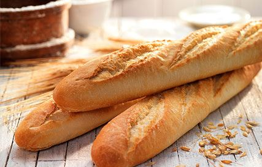
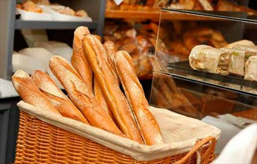
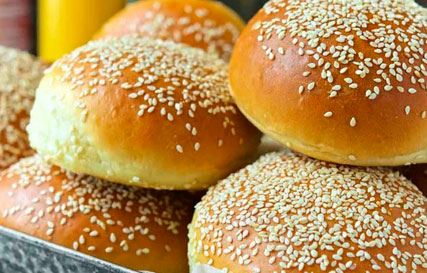
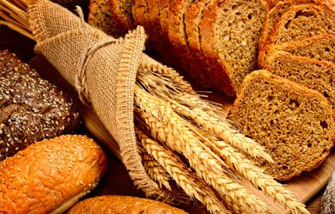
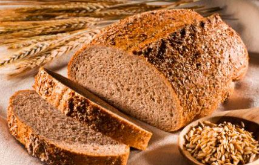
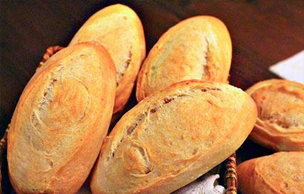
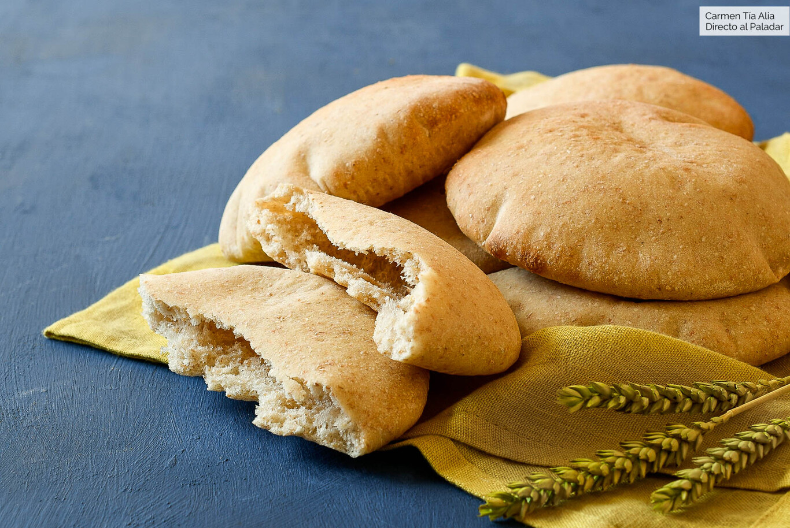

Pan blancoQuizás sea el más conocido y habitual. Encontramos en este tipo el pan de barra, el artesanal o rústico, la baguette... Es apetecible, saludable y muy nutritivo. Compuesto por harinas de trigo, es perfecto para toda la población. Un pan que nunca sobra en un hogar. |

Pan de centenoEs más compacto que el de trigo debido a que los cereales de centeno contienen menos gluten. Es de color oscuro, con un sabor relativamente amargo y una textura menos esponjosa. Tiene menos proteínas y grasas, pero más hidratos de carbono y fibra que el de trigo. |

BaguetteTambién llamado pan francés, flauta o canilla. Una baguette o baguete es una variedad de pan que se caracteriza por emplear harina de trigo, por ser mucho más largo que ancho y por su corteza crujiente. Es ideal para la elaboración de bocadillos. |

Pan de hamburguesaEste pan tiene habitualmente forma redonda y se elabora en unidades individuales. En esencia, es una variedad del pan de molde y comparte con él su textura y su sabor. Su consistencia blanda lo hace especialmente apropiado para personas con problemas de masticación. Contamos también con una variedad más dulce, brioche. |

Pan integralElaborado con harinas integrales, es más rico en vitaminas, minerales y fibra que el pan blanco, ya que se emplea harina producida a partir del grano de cereal completo. Contiene vitaminas del grupo B, muy buenas para el sistema nervioso, minerales como el fósforo, calcio, magnesio y potasio. |

Pan con SalvadoDiferente al pan integral. El pan con salvado se hace con harina refinada a la que se le añaden fragmentos de salvado, y por tanto, sigue siendo un tipo de pan blanco, pero con un mayor aporte de fibra y misma cantidad de nutrientes. Ideal para personas con estreñimiento leve o moderado y a las que no les gusta el pan integral. |

Pan de AvenaEs un pan muy nutritivo y energético, rico en proteínas, vitaminas del grupo B y minerales, en el que destaca el magnesio. Se aconseja para estados depresivos, convalecientes, anémicos y en casos de retención de líquidos por su efecto diurético. |

BolilloHecho con harina de trigo, muy esponjoso, imitando al pan que hacen en Francia. En México, este tipo de pan se conoce como bolillo, habiendo controversia respecto a lo que se conoce como birote. Muy recomendado para desayunos. |

Pan de pipasCaracterizado por su miga jugosa y el sabor de las pipas de girasol. Al comerlo se aprecia la consistencia que le dan las pipas de su corteza y de su interior. Se puede comer tanto solo como acompañado de cualquier plato, sobre todo de pescados y ahumados. |

Pan de pitaEs un tipo de pan plano blando, levemente fermentado, de harina de trigo, de consumo en el área del Mediterráneo, especialmente en el Cercano Oriente, ocasionalmente cocido en las paredes del horno y que recuerda a la corteza de la pizza. |

PróximamentePróximamente vamos a traer un pan para chuparte los dedos, muy jugoso y muy tierno a la vez, te va a encantar ¡seguro! Y el texto es demasiado pequeño para dejarlo así, así que ¡disfruta de mi prosa! Ah sí, será elaborado casero, nada de comprarlo por ahí... |
PróximamentePróximamente vamos a traer un pan para chuparte los dedos, muy jugoso y muy tierno a la vez, te va a encantar ¡seguro! Y el texto es demasiado pequeño para dejarlo así, así que ¡disfruta de mi prosa! Ah sí, será elaborado casero, nada de comprarlo por ahí... |